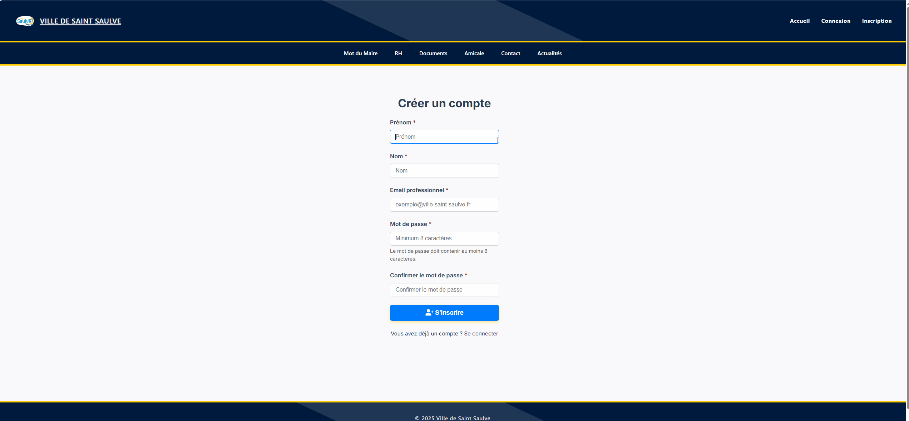
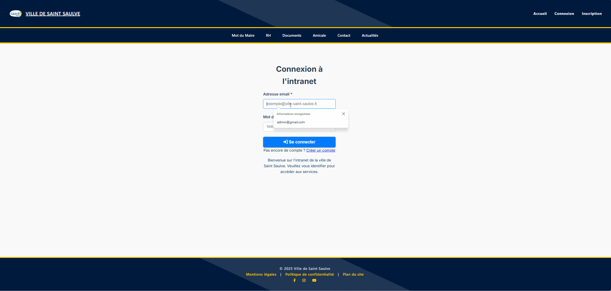
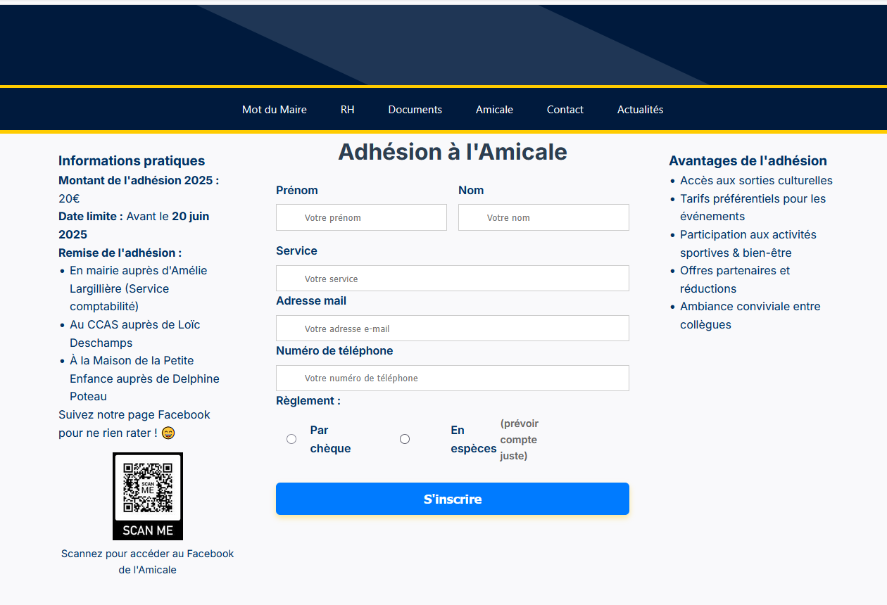

Stage · Développeur Web
Deuxième stage professionnel effectué en 2ᵉ année de BTS SIO. Développement d'un intranet municipal pour la Ville de Saint-Saulve : authentification, gestion des utilisateurs, formulaire d'adhésion à l'amicale et espace documentaire, en PHP natif sans framework.
Contexte professionnel
Captures d'écran



// Configuration de l'instance PHPMailer
$mail = new PHPMailer(true);
$mail->isSMTP(); // On utilise le protocole SMTP
$mail->Host = 'postfix.man.cavm'; // Adresse du serveur de mail interne
$mail->Port = 25; // Port standard pour du SMTP local
$mail->SMTPAuth = false; // Pas d'authentification (réseau interne)
$mail->SMTPAutoTLS = false; // TLS désactivé pour éviter les blocages
$mail->CharSet = 'UTF-8'; // Encodage pour les accents (é, à, etc.)
$mail->isHTML(true); // Le corps du mail sera interprété en HTMLLa configuration repose ici sur le protocole SMTP, qui offre une bien meilleure fiabilité que la fonction native mail() de PHP, souvent bloquée ou redirigée en spam. Le serveur désigné (postfix.man.cavm) est un serveur de messagerie interne au réseau de la mairie : les machines du réseau local étant considérées de confiance, l'authentification et le chiffrement TLS sont inutiles et donc désactivés.
Activer isHTML(true) permet d'envoyer un mail avec une mise en forme structurée (titres, paragraphes, gras), tandis que le CharSet UTF-8 garantit un affichage correct des caractères spécifiques au français.
// Préparation de la requête SQL avec des marqueurs (?)
$sql = "INSERT INTO inscription_amicale (prenom, nom, service, email, telephone, paiement)
VALUES (?, ?, ?, ?, ?, ?)";
// On prépare la requête pour la base de données
$stmt = $pdo->prepare($sql);
// On exécute la requête en injectant les variables nettoyées
$stmt->execute([$prenom, $nom, $service, $email, $telephone, $paiement]);L'insertion utilise des requêtes préparées, identifiables par les marqueurs ? dans la requête SQL. Cette technique est fondamentale en sécurité web : en séparant la structure SQL des données, on empêche tout utilisateur malveillant de manipuler la base en saisissant du code dans un champ du formulaire — c'est la protection de référence contre les injections SQL.
En amont de cette étape, les données sont également nettoyées : trim() supprime les espaces superflus et filter_var() vérifie que l'adresse e-mail respecte un format valide. Cette double vérification — forme puis fond — garantit que seules des données propres atteignent la base de données.
Déroulement du stage
Ce stage s'est déroulé au sein du service informatique de la Ville de Saint-Saulve. La mission principale consistait à développer un intranet municipal destiné aux agents de la ville, entièrement en PHP natif, HTML, CSS et JavaScript.
L'application permet aux agents de se connecter à un espace personnel, de consulter des documents internes, de s'inscrire à l'amicale du personnel et d'accéder aux informations RH. Un espace d'administration permet la gestion des comptes utilisateurs et la modération des contenus.
Travailler sans framework m'a obligé à tout construire à la main : sessions PHP, requêtes SQL manuelles, validation des formulaires côté serveur. Une expérience fondatrice pour comprendre ce que les frameworks font réellement sous le capot.